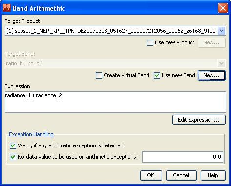

| Band Arithmetic | |
The band arithmetic tool is used to create new image sample values derived from existing bands, tie-point grids and flags. The source data can originate from all currently open and spatially compatible input products. The source data is combined by an arithmetic expression to generate the target data. By default, a new image view is automatically opened for the new sample values. You can disable this behaviour in the preferences dialog.
Please refer to the expression editor documentation for the syntax and capablities of expressions.
After the new band has been created (or an existing has been overwritten), you can change to VISAT's product browser in order to open an image view in order to inspect the resulting samples.

Select the target product for the band which will hold the resulting samples.
Use new Product checkbox
Check here, whether to create a new product for a new band or to use an existing product in order to overwrite an
existing band.
New... button
Opens the "new product" dialog, which lets you specify the new product's name and description as
well as it's parent (base) product.
Select the target band which will hold the resulting samples.
Create virtual Band checkbox
If checked, a new virtual band is created instead of a normal band. In opposite to a real band,
the pixel data of a virtual band is not stored in a product and therefore the product requires less memory
when stored to disk. A virtual band always uses its mathematical band expression to re-create it's pixel values at
any
time the data is requested.
The expression of a virtual band can be edited by opening the context menu over a selected virtual band (right-click
mouse)
in the product browser. Select Edit virtual band expression and modify the expression.
Note: If you create a virtual band, it is not possible to use the data sources of multiple products within the same expression. All data sources within an expression of a virtual band must originate from the parent product of the virtual band.
Use new Band checkbox
Check here, whether to create a new band or to overwrite an existing band of an existing product.
New... button
Opens the "new band" dialog, which lets you specify the new band's name and description.
This field takes the arithmetic expression which is used to create new data samples. Please refer to the expression editor documentation for the syntax and capabilities of expressions.
Edit Expression... button
Opens the expression editor which provides a
a convenient way to create valid arithmetic expressions.
When arbitrary expressions are evaluated it can naturally happen that some kind of numeric exceptions like division by zero occur. The options here are provided to handle such situations.
Warn, if any arithmetic exception is detected. checkbox
If checked, a dialog box is displayed after processing when arithmetic exceptions
have been detected.
No-data value to be used on arithmetic exceptions: checkbox
If checked, the given no-data value is used as pixel value
at pixel positions where a arithmetic exception has been detected (e.g. division by zero).
No-data value to be used on arithmetic exceptions: edit field
The no-data value.
Computes the new sample data and closes the dialog. Refer to the preferences dialog for an option to specify whether or not to automatically open an image view for the new data samples.